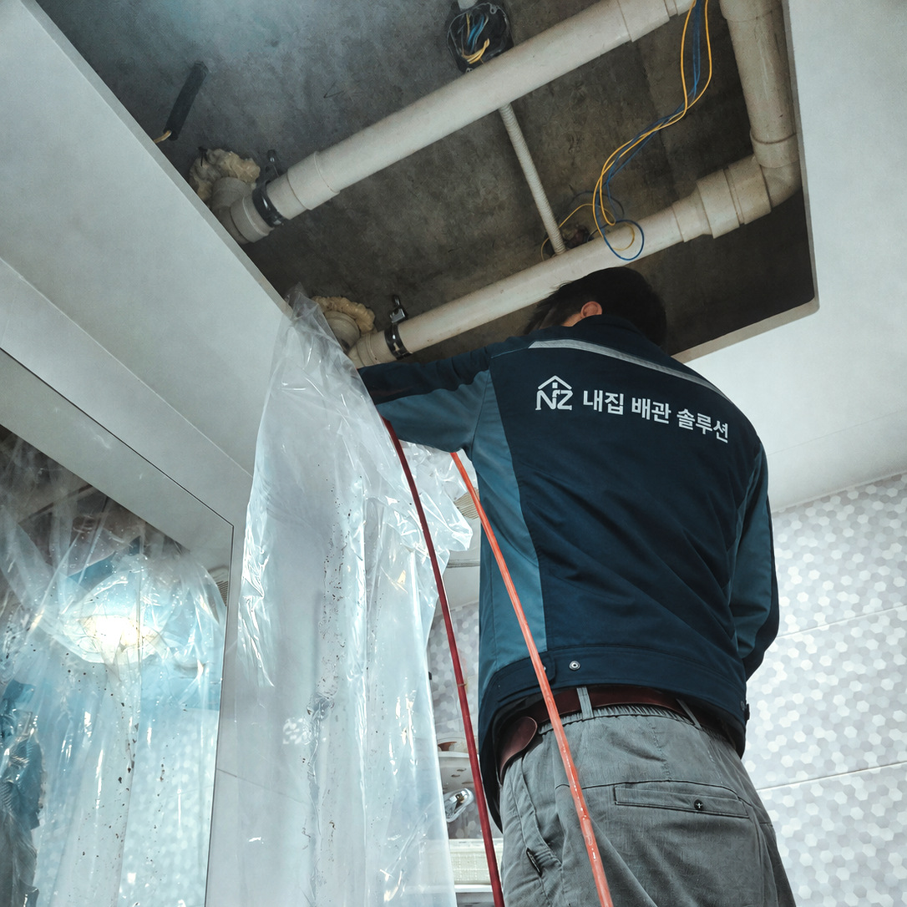
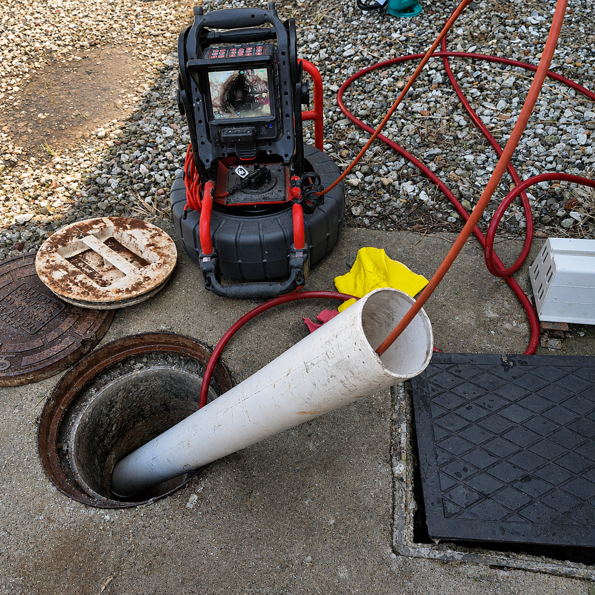

“뚫었는데 또 막히면?”
잠깐 물이 내려가는 것과 원인을 정리하는 것은 다를 수 있습니다. 반복되는 이유부터 살펴봅니다.
생활의 물길을 다시 편안하게
갑작스러운 막힘부터 반복되는 역류·냄새까지.
현장 상태를 확인하고, 필요한 작업과 비용을
설명한 뒤 진행합니다.
하수구 · 싱크대 · 변기 · 욕실 냄새 · 배관 내시경 · 고압세척

보이는 증상과 실제 막힌 위치는 다를 수 있습니다.
작업 흐름을 표현한 모션 그래픽입니다.BEFORE YOU CALL
급한 순간에도 작업을 이해하고 선택하실 수 있도록.
잠깐 물이 내려가는 것과 원인을 정리하는 것은 다를 수 있습니다. 반복되는 이유부터 살펴봅니다.
모든 막힘에 고압세척이나 철거가 필요한 것은 아닙니다. 현장에 맞는 방법을 설명합니다.
필요한 범위와 비용을 작업 전에 안내합니다. 추가 작업이 필요하면 먼저 설명드리고 확인합니다.
PROOF, NOT JUST PROMISES
현장 기록에 남아 있는 문제와 해결 과정을 소개합니다.

내시경 점검 장비 · 작업 방식 참고 사진CASE 01 · 천호동 싱크대 역류
기름때만의 문제가 아니었습니다.
배관 안에 잘린 주름관이 박혀 있었습니다.
이 사례의 현장 원본 사진은 확보 후 교체 예정입니다.
바닥 배수구와 세면대가 정상인 것을 확인한 뒤, 변기 아래 연결부에서 원인을 찾았습니다. 헐거워진 부속을 교체하고 틈을 마감했습니다.
이전 작업 후에도 남았던 막힘과 누수. 연결 구조를 살펴 원인 배관을 찾고, 100m 이상 구간을 고압세척한 현장 기록입니다.
THE NZ STANDARD
증상이 비슷해도 원인과 필요한 작업은 다를 수 있습니다.
고객이 겪은 증상과 현장 구조를 함께 확인합니다. 필요한 경우 내시경으로 보이지 않는 구간까지 살펴봅니다.
장비 이름만 나열하지 않습니다. 현장 상태에 맞는 작업 방법과 범위, 비용을 이해하기 쉽게 설명합니다.
물 빠짐과 역류 등 해당 증상에 맞춰 결과를 확인하고, 관리 시 주의할 점을 안내합니다.
내집처럼 살피고, 납득할 수 있도록 설명합니다.
CLEAR BEFORE WORK
현장을 보기 전에 최종 금액을 단정하지 않습니다. 무엇을 확인하고 어떤 작업을 진행하는지 먼저 설명드립니다.
내 상황 상담하기 ↗입구의 이물질인지, 안쪽이나 공용 배관 문제인지
길이·재질·점검구·탈거 필요 여부 등
현장에 맞는 장비와 작업 범위를 확인한 뒤 안내
실제 가격표와 미해결·재점검 비용 정책은 운영 기준 확정 후 추가할 예정입니다.
QUESTIONS & ANSWERS
상황을 알려주시면 확인 순서부터 안내하겠습니다.
이전 작업 시점과 방법, 다시 발생한 증상을 알려주세요. 같은 방법을 반복하기 전에 안쪽에 남은 원인이나 배관 구조를 살펴볼 필요가 있습니다.
모든 막힘에 필요한 것은 아닙니다. 막힌 원인과 범위, 배관 상태와 접근 조건을 확인해 적합한 작업 방법을 안내합니다.
사진은 증상 파악과 작업 준비에 도움이 됩니다. 다만 안쪽 상태와 구조를 확인해야 하는 경우가 있어 최종 작업 범위와 비용은 현장 확인 후 안내합니다.
강동구를 중심으로 서울·하남·성남 지역은 위치와 일정에 따라 상담합니다. 방문 가능 여부, 예상 일정과 출장비 조건은 예약 전에 확인해주세요.
작업 날짜와 위치, 다시 나타난 증상을 알려주세요. 기존 작업 내용과 현장 상태를 바탕으로 확인 방법을 안내합니다. 재방문·비용 적용은 확인 후 안내드립니다.
LET'S RESTORE YOUR FLOW
지역과 문제 위치, 증상을 알려주세요.
가능한 확인 순서와 방문 일정을 안내하겠습니다.
사진·영상이 있으면 함께 보내주세요.
최종 판단은 현장 상태를 확인한 뒤 안내합니다.